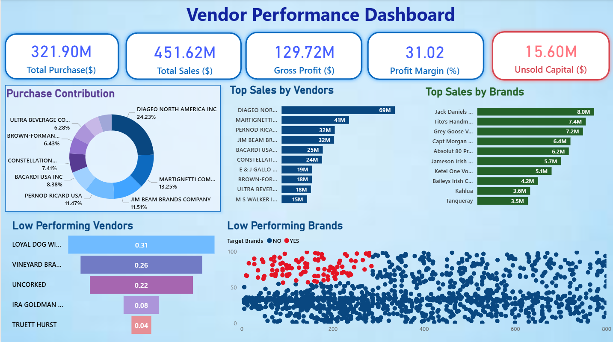

Vendor Performance Analysis
An analytical project using Python, SQL & Power BI to evaluate vendor performance across cost, delivery, and profitability metrics.
Problem Statement
Companies often depend on many vendors but lack visibility into how they differ in cost efficiency, delivery reliability, and profitability. This leads to excess costs, delayed deliveries, and missed opportunities to streamline supplier networks. The aim was to quantify vendor performance to support strategic supply chain decisions.
Solution Approach
- Ingested vendor sales, purchase, freight, and inventory data.
- Cleaned and merged datasets using Python & SQL (SQLite) to generate a consolidated vendor_sales_summary table.
- Designed SQL queries and CTEs to compute metrics like total purchase costs, sales volume, freight cost, and gross profit per vendor.
- Explored data visually in Jupyter notebooks (Seaborn, Matplotlib).
- Developed Power BI dashboard displaying vendor KPIs: delivery time, cost effectiveness, sales vs purchase ratio, inventory turnover, etc.
Data Pipeline Overview

SQL Queries
Dashboard Preview

*This dashboard visualizes vendor performance, shipment trends, and revenue insights to help optimize supply chain operations.*
Key Insights Discovered
- Top vendors contributing the most sales & gross profit were identified, while several low-volume vendors had disproportionately high freight & purchase costs.
- Bulk purchasing led to lower per-unit costs for certain vendors; revealed brands where cost per unit could be improved.
- Vendors with slow delivery or high freight cost were flagged for renegotiations.
- Inventory turnover varied significantly across vendors — some holding inventory too long, increasing storage cost and risk.
Result / Impact
- Cost Saving Opportunities: Pinpointed vendors whose cost structures (freight + purchase price) could be renegotiated, with potential for reduced spend.
- Vendor Optimization: Helped highlight which vendors to prioritize vs underperformers, enabling leaner vendor management.
- Actionable Visibility: Dashboard enabled transparent views of vendor performance for regular review.
- Business Recommendations: Suggested strategies like bulk discount leverage, vendor consolidation, and optimizing inventory turnover per vendor.